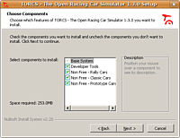

Torcs
Dieser Artikel wurde für die folgenden Ubuntu-Versionen getestet:
Ubuntu 14.04 Trusty Tahr
Zum Verständnis dieses Artikels sind folgende Seiten hilfreich:
Torcs (The Open Racing Car Simulator)  ist ein freies Autorennspiel, das mit realistischem Fahrverhalten und guter Grafik überzeugt. Es sind viele verschiedene Fahrzeuge und Strecken enthalten. Jedoch sind fast alle Strecken Fantasiestrecken, während die Autos realistische Nachbildungen sind. Von der Herstellerseite und anderen Seiten können zusätzliche Fahrzeuge und Strecken heruntergeladen und eingebunden werden.
ist ein freies Autorennspiel, das mit realistischem Fahrverhalten und guter Grafik überzeugt. Es sind viele verschiedene Fahrzeuge und Strecken enthalten. Jedoch sind fast alle Strecken Fantasiestrecken, während die Autos realistische Nachbildungen sind. Von der Herstellerseite und anderen Seiten können zusätzliche Fahrzeuge und Strecken heruntergeladen und eingebunden werden.
Aufgrund der langsamen Entwicklung der letzten Jahre hat sich der Entwicklungszweig Speed Dreams (vormals Torcs-NG) gebildet. Neben vielen Verbesserungen die bis heute ihren Weg nicht in TORCS gefunden haben, sollen hier künftig auch Wünsche von Spielern stärker berücksichtigt werden.
Installation¶
Zur Installation ist es nur nötig, folgende Pakete zu installieren [1]:
torcs (universe )
 mit apturl
mit apturl
Paketliste zum Kopieren:
sudo apt-get install torcs
sudo aptitude install torcs
Weiterhin ist zu empfehlen, folgende Pakete zu installieren, denn sie fügen weitere Strecken (Tracks) bzw. weitere Fahrzeuge (Cars) hinzu:
torcs-data-tracks (universe )
torcs-data-cars (universe )
mit apturl
Paketliste zum Kopieren:
sudo apt-get install torcs-data-tracks torcs-data-cars
sudo aptitude install torcs-data-tracks torcs-data-cars
Nach erfolgreicher Installation kann man das Spiel im Gnome-Menü unter
"Anwendungen -> Spiele -> Torcs"
oder mit dem Befehl torcs aufrufen. [2]
Autos hinzufügen¶
Torcs beinhaltet schon standardmäßig viele Autos und Strecken. Wem das jedoch nicht ausreicht, der kann sich problemlos weitere Fahrzeuge und Strecken nachinstallieren. Wenn man zum Spielen Wine benutzt, kann man einige Autos gleich bei der Installation hinzufügen. Leider sind die Fahrzeuge nicht in den Quellen enthalten und müssen manuell nachinstalliert werden, doch dies erweist sich als nicht so schwer. Zunächst lädt man hier folgende Archive herunter:
TORCS-1.3.0-data-cars-extra.tgz (mandatory, cars)
TORCS-1.3.0-data-cars-nascar.tgz (Nascar cars, optional)
TORCS-1.3.0-data-cars-Patwo-Design.tgz (rally cars, optional)
TORCS-1.3.0-data-cars-kcendra-gt.tgz (GT cars from the 60's, optional)
TORCS-1.3.0-data-cars-kcendra-roadsters.tgz (roadsters from the 60's, optional)
TORCS-1.3.0-data-cars-kcendra-sport.tgz (sport cars from the 60's, optional)
TORCS-1.3.0-data-cars-VM.tgz (race cars, optional)
Diese entpackt [7] man dann anschließend. Je nach gewähltem Paket enthalten die Archive neben dem Ordner cars auch noch den Ordner categories. Hier in den jewiligen Ordner wechseln und die Daten aus cars mit Root-Rechten [6] nach /usr/share/games/torcs/cars sowie für categories nach /usr/share/games/torcs/categories kopieren.
Hinweis:
Beim Herunterladen darauf achten, dass man nicht die Daten für eine andere Version nimmt.
Strecken hinzufügen¶
Für Strecken nimmt man die Pakete:
TORCS-1.3.0-data-tracks-oval.tgz (oval-like tracks, optional)
TORCS-1.3.0-data-tracks-dirt.tgz (dirt tracks, optional)
TORCS-1.3.0-data-tracks-road.tgz (mandatory, road-circuit tracks)
Diese wie oben beschrieben in die entsprechenden Ordner kopieren. Es gibt die Ordner /usr/share/games/torcs/tracks/oval, /usr/share/games/torcs/tracks/dirt und /usr/share/games/torcs/tracks/road.
Dann startet man das Spiel mit dem Befehl torcs [2]. Dabei richtet das Programm alle Strecken und Fahrzeuge so ein, daß sie ab sofort benutzt werden können.
Installation mit Wine¶
Es ist auch möglich, Torcs mit Wine zu installieren und zu spielen. Dazu braucht man eine Installationsdatei für Windows, die man sich beispielsweise hier  herunterladen kann. Die Datei öffnet man wie gewohnt mit Wine [3]. An der Stelle "Choose Components" muss man sich dann entscheiden, welche Komponenten installiert werden sollen:
herunterladen kann. Die Datei öffnet man wie gewohnt mit Wine [3]. An der Stelle "Choose Components" muss man sich dann entscheiden, welche Komponenten installiert werden sollen:
Developer Tools - installiert Programme zum Erstellen von Strecken (z.B. den Track-Editor)
Non Free - Rallye Cars - installiert einige Rallye-Fahrzeuge, z.B. den Toyota Corolla WRC oder den Subaru Impreza WRC
Non Free - Classic Cars - installiert einige sehr alte Fahrzeuge, z.B. eine Corvette oder eine Cobra Shelby
Non Free - Prototype Cars - installiert weitere Autos
Danach wählt man das Installationsverzeichnis aus und installiert das Programm. Danach kann man das Programm im GNOME-Menü unter "Anwendungen -> Wine -> Programme -> Torcs - The Open Racing Car Simulator" bzw. mit
wine ~/.wine/Programme/torcs/wtorcs.exe
aufrufen. Der Pfad muss entsprechend angepasst werden, wenn das Programm nicht in den Standardordner installiert wurde. Es wurde auch eine Desktop-Verknüpfung angelegt, mit einem Weinglas als Symbol (Das Symbol für Torcs wurde dabei nicht übernommen). Die Datei mit der Endung .lnk kann bedenkenlos gelöscht werden, da sie eine Windows-Datei ist und für Linux die Verknüpfung ohne Endung angelegt wurde. Zur Deinstallation öffnet man den "Wine Anwendungsentferner" unter "Anwendungen -> Wine -> Uninstall Wine Software". Dort wählt man den Eintrag Torcs aus und klickt rechts auf "Entfernen". Nachfolgende Sicherheitsabfragen muss man mit "Ja"' beantworten. Damit wird Torcs deinstalliert. Sollte der Eintrag dann immer noch vorhanden sein, muss man nochmals auf "Entfernen" klicken und die Sicherheitsabfrage mit "Ja" beantworten. Den Menü-Eintrag muss man dann mit dem Menüeditor [5] bearbeiten.
|  | |||
| Beginn der Installation | Komponenten, die installiert werden sollen, auswählen | Auswahl des Programmordners | Torcs mit Wine deinstallieren |
Das Spiel¶
Nach dem Start des Programms erscheint ein Begrüßungsbildschirm. Dann muss man mit der rechten Maustaste klicken, und anschließend erscheint ein Menübildschirm mit drei Menüs:
Die Menüs¶
Race
Configure Players
Options
Darunter steht Quit zum Beenden des Spiels.
| Startbildschirm | Hautpmenü |
Race¶
In diesem Menü werden Rennen gestartet. Es gibt sechs Rennmodi, wobei man maximal 19 Gegner pro Rennen hat (außer Practice):
| Modus | Bedeutung |
| Quick Race | beliebig langes Rennen auf einer Strecke nach Wahl |
| Non-Championship Race | es wird zuerst ein Qualifying von 3 Runden gefahren. Der Schnellste startet dann im Qualifikationsrennen von 13 Runden von der Pole. Dann wird in umgekehrter Reihenfolge der Ergebnisse des Qualifikationsrennens ein Hautprennen von 13 Runden gestartet, d.h. der Erste des Rennens startet vom letzten Platz, der zweite vom zweitletzten usw. |
| Endurance Race | Man fährt zuerst ein Qualifying von 3 Runden. Danach fährt man in der Reihenfolge der Platzierungen des Qualifyings ein Rennen von 217 Runden. |
| Championship | Man fährt auf 4 verschiedenen Strecken, die man sich nicht aussuchen kann, zunächst ein Qualifying von 3 Runden und dann ein erstes Rennen von 15 Runden. In der umgekehrten Reihenfolge des Ergebnises des ersten Rennens wird das zweite Rennen, ebenfalls von 15 Runden, gestartet. So geht das bei allen 4 Kursen. |
| DTM Race | Rennen auf einer Strecke nach Wahl. Zuerst fährt man ein Qualifying von 12 Runden. Dann folgt das Qualifikationsrennen von 16 Runden. Die Platzierungen ergeben dann die Startaufstellung für das Hauptrennen. Der Erste startet von Pole, der Zweite von Platz zwei usw. |
| Practice | Beiebig lange Testfahrt mit einem Auto auf einer Strecke nach Wahl |
Configure Race¶
In diesem Menü können Einstellungen für das Rennen getroffen werden, z.B. die Gegner oder die Strecke, auf der man fährt. Zuerst wählt man unter Select Track die Strecke aus. Links stehen Informationen zur Strecke, etwa die Länge (Length), Breite (Width) oder die Anzahl der Boxen (Pits). Mit einem Klick auf "Accept" ganz unten gelangt man auf die nächste Seite. Hier geht es um die Teilnehmer des Rennens. In der Spalte Selected stehen alle Teilnehmer des Rennens. Dies können maximal 20 sein. In der Spalte Not Selected stehen alle verfügbaren Fahrer, die nicht am Rennen teilnehmen. Über die Schaltfläche "(De)Select" können Fahrer vom Rennen ausgeschlossen oder eingebunden werden. Zwischen den Spalten werden Informationen über die Gegner angezeigt, etwa der Name oder welches Auto sie fahren. Mit einem Klick auf "Accept" geht es dann auf die nächste Seite, wo man die Rennlänge in km oder die Anzahl der Runden festlegen kann. Die Seite ist aber nicht bei jedem Rennmodus zu finden, z.B. nicht bei einem DTM-Race. Mit einem Klick auf "Accept" erhält man wieder das vorherige Menü. Anschließend auf "New Race" klicken, und das Spiel wird gestartet.
| Stecke einstellen | Fahrer einstellen | Länge und Rundenzahl einstellen |
Configure Players¶
Hier können die Einstellungen für jeden Spieler getroffen werden. Rechts oben unter Players kann man bis zu 10 verschiedene Spieler einstellen.
| Einstellung der Spieler | |
| Unterpunkt | Bedeutung |
| Name | Gibt den Namen des Spielers an. |
| Category | Gibt die Kategorie des Fahrzeugs an, z.B. Formel 1 oder Rallye. |
| Car | Gibt den Namen des Fahrzeuges an. |
| Race Number | Startnummer |
| Transmission | Gibt an, ob ein Automatikgetriebe oder die Handschaltung verwendet wird. |
| Pit Stops | Gibt an, wie viele Boxenstops man machen möchte. (Eine hohe Zahl bewirkt, das man mit weniger Sprit losfährt). |
| Level | Gibt den Schwierigkeitsgrad an. |
| Auto Reverse | bewirkt, das man beim Abbremsen im Rückwärtsgang sich nicht dreht |
Mit der Schlatfläche "delete" löscht man Spieler, mit der Schaltfläche "Controls" verändert man die Tastenbelegung.
| Änderung der Tastenbelegung | Änderungen der Spieler |
Options¶
Graphic¶
Hier lassen sich Grafikeinstellungen bearbeiten. Es empfiehlt sich, die Einstellungen so zu lassen, da zu hohe Einstellungen schwere Grafikfehler hervorrufen können, z.B. das Fehlen von Rädern.
Display¶
Hier lassen sich Einstellungen bezüglich der Darstellung und des Fensters treffen.
Screen Resolution - Bildschirmauflösung. Ändert die Größe des Fensters. Auf leistungsschwächeren Rechnern sollte der niedrig sein.
Color Depth. Farbtiefe
Display Mode - Darstellungsmodus. Gibt an ob das Spiel in einem Fenster (Windows-Mode) oder im Vollbild laufen soll (Full-Screen-Mode)
Max Frequency - Frequenz des Bildschirms. Der voreingestellte Wert kann beibehalten werden.
Video Mode Initialization - Diese Einstellung kann beibehalten werden.
Sound¶
Einstellung des Sounds. Ist disabled eingestellt, so ist der Ton deaktiviert. Bei openal und plib hat man Ton, bei plib zusätzlich Geräusche beim Schalten.
Während eines Rennens¶
Boxenstopp¶
Besonders während langer Rennen kann es sein, das der Tank leer wird. Dann muss man an die Box fahren, und das Auto betanken lassen. Um einen Boxenstopp zu machen, fährt man an die Box des Spielers. Diese ist am gelben Tor mit der Aufschrift Player Pit Here zu erkennen. (Die Boxen sind in der Reihenfolge der Startaufstellung angeordnet, d.h. der von Pole gestartete Fahrer hat die erste Box, der von Platz 2 gestartete Fahrer hat die zweite Box usw.). An seiner Box hält man dann, und es kommt ein Bildschirm, wo man angeben kann, wie viel getankt wird (Fuel amount [Liters]) bzw. wie viel repariert wird (Repair Amount). Mit einem Klick auf Repair wird dann getankt oder repariert. Nach Beendigung des Boxenstopps kann man wieder Gas geben und weiterfahren.
 | ||
| Blick auf Spieler-Box | In der Box | Boxenstopp-Bildschirm |
Hinweis:
Nicht jede Strecke hat eine Boxengasse oder nicht genug Boxen für jeden Fahrer. Während man den Boxenstopp-Bildschirm sieht, läuft das Rennen nicht weiter. Erst wenn man wieder sein Fahrzeug an der Box stehen sieht, läuft das Rennen weiter. Sollte der Boxenstopp-Bildschirm nicht kommen, so steht man entweder an der falschen Box, oder man steht nicht richtig in dem Feld drin.
Ausscheiden¶
Wenn der Tank leer ist und man es nicht bis in die Box schafft oder das Auto einen zu großen Schaden hat, so bleibt das Auto stehen, und man scheidet aus. Dies erkennt man daran, das das Auto in die Luft gehoben wird und außerhalb der Strecke an der Streckenegrenzung abgestellt wird. Wenn alle anderen Autos im Ziel sind, wird das Rennen automatisch beendet. Um zu einem anderen Fahrer zu wechseln, müssen die Tasten Bild ↑ oder Bild ↓ gedrückt werden
 |  | ||
| Tank leer | Das Auto wird in die Luft gehoben | Das Auto wird an den Streckenrand befördert | Das Auto wird neben der Strecke abgestellt |
Steuerung¶
| Steuerung des Autos | |
| Taste | Bedeutung |
| ↑ | Gas geben |
| ↓ | Bremsen |
| ← | Nach Links lenken |
| → | Nach Rechts lenken |
| Steuerung der Kameras | |
| Taste | Bedeutung |
| F1 | Hilfe zur Steuerung |
| F2 | verschiedene Ansichten vom Fahrer bzw. von hinten |
| F3 | Ansicht von weit hinten oder von vorn |
| F4 | Ansicht von der Seite, von weit hinten oder von vorn |
| F5 | Ansicht von oben, ein Teil der Strecke ist zu sehen |
| F6 | Ansicht von schräg oben auf die Seite |
| F7 | Ansicht von oben oder schräg oben, die gesamte Strecke ist zu sehen |
| F8 | Ansicht von schräg oben auf die Front des Fahrzeuges |
| F9 | Ansicht von schräg oben auf die Front des Fahrzeuges, näher rangezoomt als F8 |
| F10 | Ansicht von schräg oben, es wird öfter heran- und wieder herausgezoomt |
| F11 | "TV-Modus" verschiedene Kameraansichten, es wird zwischen Autos hin- und hergewechselt |
| F12 | ein Screenshot wird gemacht |
| Bild ↑ | zum Vordermann wechseln |
| Bild ↓ | zum Hintermann wechseln |
| Pos1 | Ansicht von weit hinten |
| Ende | Ansicht des Heckflügels |
| Die Kontrollanzeigen. Mit den Tasten lassen sich die Kontrollinstrumente an- bzw. ausschalten. | ||
| Taste | Befindet sich wo auf dem Bildschirm: | Bedeutung |
| 0 | Schaltet auf digitale Instrumente um (und wieder zurück). | |
| 1 | Oben Links | Zeigt Platzierung, Zeiten, Runden, Tankinhalt usw. an. |
| 2 | Mitte unten | Beinhaltet Tachometer, Drehzahlmesser und Ganganzeige |
| 3 | Links unten | Zeigt die Zeitabstände an. |
| 4 | Rechts unten | Zeigt an, in welche Richtung die Bewegung verläuft. |
| 5 | Rechts oben | Misst die Frames pro Sekunde. |
| 9 | Mitte oben | Zeigt einen Rückspiegel an. |
Fahrzeugeinstellungen bearbeiten¶
In dem Ordner /usr/share/games/torcs/cars/ gibt es zu jedem der Autos einen Ordner. In diesem Ordner ist eine Datei enthalten, die Name_des_Fahrzeugs.xml heißt, wobei "Name_des_Fahrzeugs" den Namen des Autos bedeutet (so heißt auch der Ordner in dem die Datei liegt). Diese .xml-Datei öffnet man dann mit einem Editor mit Root-Rechten [6]. In dem Abschnitt, der mit <section name="Aerodynamics"> beginnt, kann man Aerodynamik-Einstellungen, z.B. Spoiler bearbeiten.
Hinweis:
Man sollte vorher immer Sicherungskopien erstellen, falls beim Editieren etwas schiefgeht. Außerdem sollte man in der jeweiligen Zeile nur den Wert "val" editieren, also z.B. bei "val="1.8"" sollte nur die Zahl 1.8 durch eine andere ersetzt werden. Man sollte sich außerdem bewusst sein, das die Einstellungen das Auto auch spürbar langsamer machen können.
Es gibt auch spezielle Erweiterungen, die diese Einstellungen graphisch vornehmen. Diese benötigen aber zusätzlichen Aufwand bei der Installation und machen eigentlich nichts anderes, als wenn man dies manuell vornimmt.

Infobox¶
| Torcs - The Open Racing Car Simulator | |
| Originaltitel: | Torcs |
| Genre: | Rennsimulation |
| Sprache: | Englisch |
| Veröffentlichung: | 2006 (Version 1.3.0) |
| Medien: | Download |
| Systemvoraussetzungen: | mindestens einen Prozessor mit 550MHz, 128MB Arbeitsspeicher und eine OpenGL 1.3 kompatible Grafikkarte mit 32 MB Grafikspeicher. |
| Läuft mit: | nativ, Wine |
- Erstellt mit Inyoka
-
 2004 – 2017 ubuntuusers.de • Einige Rechte vorbehalten
2004 – 2017 ubuntuusers.de • Einige Rechte vorbehalten
Lizenz • Kontakt • Datenschutz • Impressum • Serverstatus -
Serverhousing gespendet von